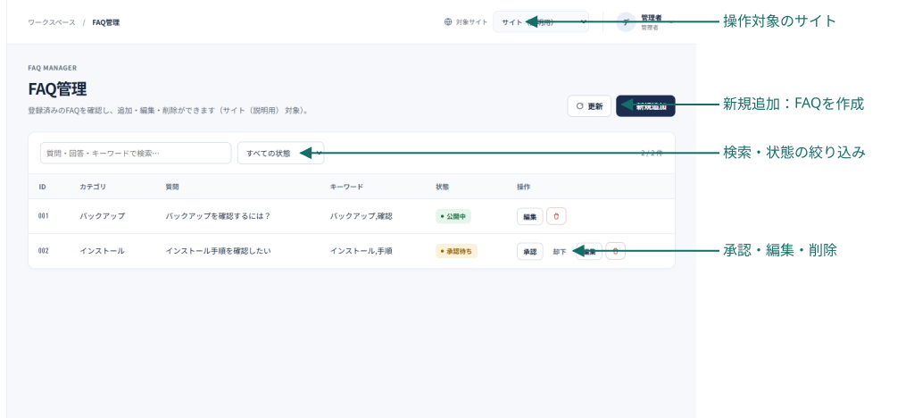
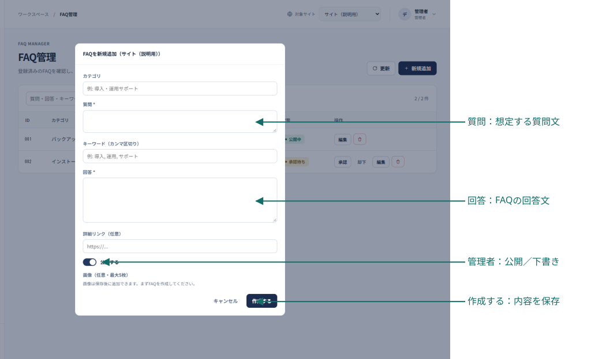

FAQ一覧
サイトを選択 → 検索・状態で絞り込み → FAQを選択。新規追加 → 作成フォームを開く。

FAQの作成
質問・回答を入力 → 作成する → FAQを保存。エラー時は入力内容を残して通知します。
管理者は「公開する」または「下書き」を選択できます。スタッフが保存した内容は、管理者の承認待ちになります。

保存したFAQ
保存に成功 → FAQを一覧に追加 → フォームが編集モードに切り替わる → 画像の追加が可能。

FAQの編集
FAQを選択 → 編集 → 内容を変更 → 更新する。エラー時は入力内容を残して通知します。
FAQの承認と却下後の操作
管理者が承認待ちのFAQを開く → 質問・回答・画像を確認 → 承認または却下。
Excelファイルを却下 → 所属FAQの編集をロック → FAQ一括取込 → 編集 → 承認する → 更新 → FAQの編集が可能。

スタッフが保存 → 承認待ち → 管理者が承認 → FAQを回答に使用。スタッフには下書きの選択はありません。

FAQの削除
対象FAQを確認 → ごみ箱 → 確認 → 一覧から削除。新しい質問への回答には使用されません。すでに送信したメッセージは残ります。
関連ページ： FAQ画像 · ExcelからのFAQ取込。